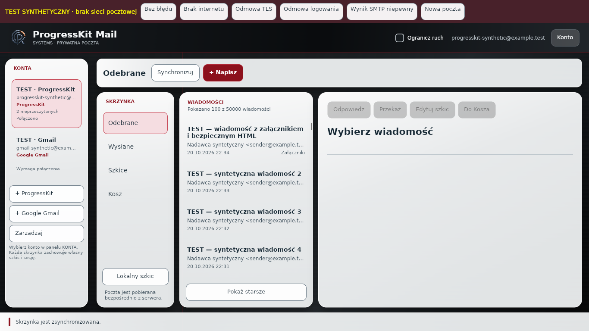

Twoja domena
W pilotażu ustalimy, jakich adresów w domenie potrzebuje Twoja firma i jak dziś korzysta z poczty.
 ProgressKitMAIL / PILOTAŻ
ProgressKitMAIL / PILOTAŻ
Rozwijamy zarządzaną pocztę dla małych firm, które chcą mieć własny adres i bezpośredni kontakt techniczny przy konfiguracji.
Zgłoszenie wyraża zainteresowanie pilotażem. Nie uruchamia skrzynki ani płatnego abonamentu.

Widok działającej aplikacji w teście syntetycznym. Nie przedstawia konta klienta ani gotowego środowiska komercyjnego.
W pilotażu ustalimy, jakich adresów w domenie potrzebuje Twoja firma i jak dziś korzysta z poczty.
Zakres uruchomienia i ewentualnej migracji ustalamy z każdą firmą przed podjęciem decyzji o usłudze.
Porozmawiasz z osobą rozwijającą rozwiązanie i wspólnie sprawdzicie, czy odpowiada Twoim potrzebom.
ProgressKit administruje własnym środowiskiem pocztowym. Dla firm projektujemy osobne środowisko komercyjne, które musi przejść odbiór izolacji danych, kopii zapasowych i procedur operacyjnych przed uruchomieniem płatnych kont.
Teraz zbieramy zgłoszenia do pilotażu i poznajemy potrzeby firm. Nie przenosimy poczty ani nie tworzymy produkcyjnych skrzynek na podstawie samego zgłoszenia.
Ceny są propozycją wymagającą zatwierdzenia i weryfikacji kosztów. W pilotażu nie przyjmujemy płatnych zamówień.
99 zł / mies. · propozycja
Planowany pakiet z jedną skrzynką w domenie firmy oraz pomocą przy uruchomieniu.
Zgłoś zainteresowanie179 zł / mies. · propozycja
Planowany pakiet do trzech skrzynek z ustaleniem konfiguracji i sposobu wsparcia.
Zgłoś zainteresowanieWycena indywidualna
Liczbę skrzynek, domeny i sposób obsługi określimy po rozmowie.
PorozmawiajmyZakres i ceny nie stanowią oferty zawarcia umowy. Ostateczne warunki będą dostępne dopiero po odbiorze środowiska komercyjnego.
Wystarczą trzy informacje. Skontaktujemy się, aby zrozumieć potrzeby i ustalić, czy pilotaż ma sens dla Twojej firmy.
Napisz, jak nazywa się firma, ilu skrzynek potrzebujesz i czego oczekujesz od firmowej poczty.
Zgłoś firmę do pilotażuPrzycisk otwiera przygotowaną wiadomość w Twoim programie pocztowym. Sprawdź treść i samodzielnie naciśnij „Wyślij”. Samo kliknięcie nie wysyła zgłoszenia.
Jeśli program pocztowy się nie otworzy, skopiuj adres i napisz ze swojej poczty:
Kontakt w sprawie pilotażu: Paweł Rzepczyk, ProgressKit. Wiadomość trafi do korespondencji e-mail i posłuży odpowiedzi na Twoje zapytanie. Strona nie zapisuje zgłoszeń ani nie potwierdza ich dostarczenia. Nie wysyłaj haseł, kluczy dostępowych ani danych szczególnie chronionych. Pytania dotyczące swoich danych kieruj na powyższy adres. Zgłoszenie nie zapisuje Cię do newslettera ani nie uruchamia abonamentu.